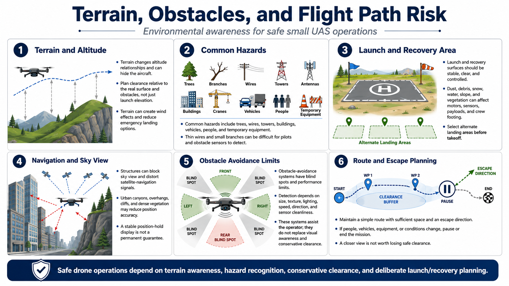

Terrain and Obstacles
Connecting to LMS... Progress: in progress

Narration
Terrain changes altitude relationships and can hide the aircraft, create wind effects, or reduce emergency landing options. Plan clearance relative to the actual surface and obstacles, not only an abstract launch elevation.
Common hazards include trees, branches, wires, towers, antennas, buildings, cranes, vehicles, people, and temporary equipment. Thin wires and small branches can be difficult for both pilots and obstacle sensors to detect.
Launch and recovery surfaces should be stable, clear, and controlled. Dust, loose debris, snow, water, slope, or vegetation can affect motors, sensors, payloads, and crew footing. Select alternate landing areas before takeoff.
Structures can block sky view and distort satellite-navigation signals. Urban canyons, overhangs, cliffs, and dense vegetation may reduce position accuracy or create reflected signals. A stable position-hold display should not be treated as a permanent guarantee.
Obstacle-avoidance systems have blind spots and performance limits related to size, texture, lighting, speed, direction, and sensor cleanliness. They assist the operator but do not replace visual awareness, clearance, or conservative path planning.
Maintain a simple route with sufficient space and an escape direction. If people, vehicles, equipment, or conditions change, pause or end the mission. A closer view is not worth losing safe clearance.